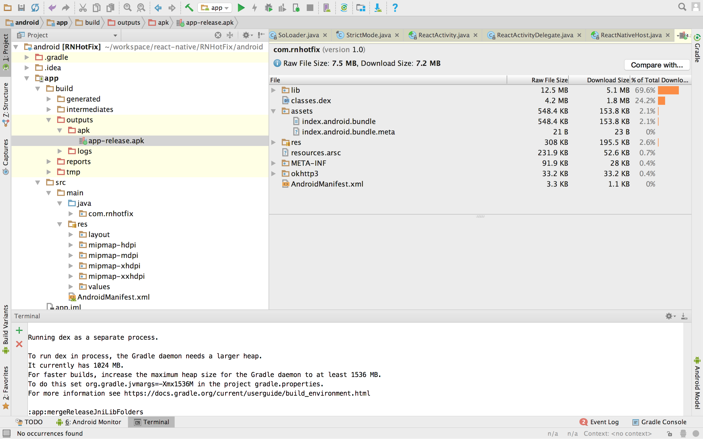

安卓端react-native热更新方案
1 RN加载js文件的机制
做过安卓原生热更新的同学都知道，要实现热更新需要自己实现一个DexClassLoader来加载需要热更新的类。同理，要实现RN的热更新自然需要我们自己来控制js文件的加载逻辑。那么RN是如何加载js文件的呢？首先，我们在开发的时候会有多个js文件，但是在我们构建release包的时候，这些js文件会连同rn源代码和第三方库被打包进一个叫做index.android.bundle的js文件中，这个文件会被放到asset目录中去，然后RN应用在启动的时候就会去加载这个js文件。

那么RN具体是如何加载这个js的呢？我们可以看到在RN的MainApplicat这个类中实现了ReactApplication这个接口，该接口如下所示：
而在ReactNativeHost这个类中有以下两个方法，其中getJsBundleFile这个方法的注释中写到这个方法是用来返回自定义的bundle路径的。至此，我们知道了，想要加载我们自己的js文件可以通过覆写该方法来实现。
|
|
2 RN打包命令
我们已经知道了如何来加载自己的js文件了，那么我们的这个js文件又该如何生成呢？可以使用react-native bundle命令,该命令的详细使用如下所示：
在安卓上我们可以通过以下命令来生成我们的bundle：
3. 热更新Demo
为了方便理解，笔者这里写了RN热更新的客户端实现和服务端小Demo，欢迎star和issue。
客户端
服务端
热更新服务端采用python的flask框架实现，服务端只提供两个接口，一个用来检测客户端是否需要更新bundle，一个用来供客户端下载最新bundle。最新的js bundle需放到latestJsBundle目录中，且名称必须为“2.3.4.3”这种格式。
4. TODO
- 完整性校验
- 增量更新
bsdiff python文档
bsdiff python模块中有两个方法:
Diff(origData, newData);
很明显该方法的参数为原始数据和新数据，返回值用于构造新数据Patch(origData, newDataLength, controlTuples, diffBlock, extraBlock)
该方法的参数为原始数据，新数据的长度以及Diff方法的返回值，返回值为新数据
react-native踩坑记录
#安卓真机如何打开dev menu
在RN的默认页面会显示
Double tap R on your keyboard to reload,
Shake or press menu button for dev menu
这句话是说想要打开dev menu可以使劲摇你的手机或者点击手机上的菜单按钮，
如果摇一摇没有的话，换一个手机，如果你的手机没有菜单按钮的话，换一个手机
Reload 加载失败
- reload时需要在项目更目录下运行react-native start命令以启动打包服务器
- 测试机与打包服务器需要再同一wifi环境且要在Dev Setting中设置打包服务器的ip，
或者是用数据线将测试机连接到电脑上并运行:adb reverse tcp:8001 tcp:8081
Button 设置margin失效
在使用button的时候你会发现给它设置margin根本没有作用，此时可以使用TouchableOpacity
组件替代button
FlatList 如何下拉刷新
FlatList是用来替换ListView的RN组件，官方文档中提及FlatList支持下拉刷新
A performant interface for rendering simple, flat lists, supporting the most handy features:
Fully cross-platform.Optional horizontal mode.
Configurable viewability callbacks.
Header support.
Footer support.
Separator support.
Pull to Refresh.
Scroll loading.
ScrollToIndex support.
但是如果如果你只是简单的使用FlatList而不设置任何属性的话你会发现往下拉的时候
根本没有反应。此时你需要设置onRefresh属性，这样下拉时才会有反应，而你也能
在onRefresh方法中做数据刷新。
java设计模式常见问题总结
对java的23种设计模式还不了解的同学可以参考该博客:http://www.cnblogs.com/maowang1991/archive/2013/04/15/3023236.html
1.工厂模式与建造者模式的区别
我的理解是使用工厂模式创建出来的所有对象都是一模一样的，而使用建造者模式创建出来的不同对象可能拥有不同的属性。什么叫不同的对象拥有不同的属性呢？为了方便理解，这里举个安卓中的具体例子：AlertDialog.Builder
安卓中的AlertDialog这个类的创建就是使用了建造者模式。一般来说我们创建一个AlertDialog实例的方法是：
new AlertDialog.Builder(MainActivity.this).builder.setMessage(“确认退出吗？”).builder.setTitle(“提示”).create();
我们在每次在创建AlertDialog的时候可以设置不同的Message和Title，每次设置的不同的Message或者Title就是不同的属性。
2.代理模式与装饰器模式的区别
装饰器模式关注于在一个对象上动态的添加方法，然而代理模式关注于控制对对象的访问。换句话 说，用代理模式，代理类（proxy class）可以对它的客户隐藏一个对象的具体信息。因此，当使用代理模式的时候，我们常常在一个代理类中创建一个对象的实例。并且，当我们使用装饰器模 式的时候，我们通常的做法是将原始对象作为一个参数传给装饰者的构造器。
我们可以用另外一句话来总结这些差别：使用代理模式，代理和真实对象之间的的关系通常在编译时就已经确定了，而装饰者能够在运行时递归地被构造。